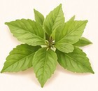
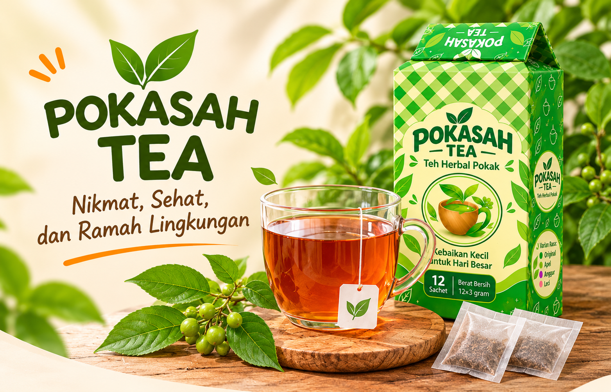
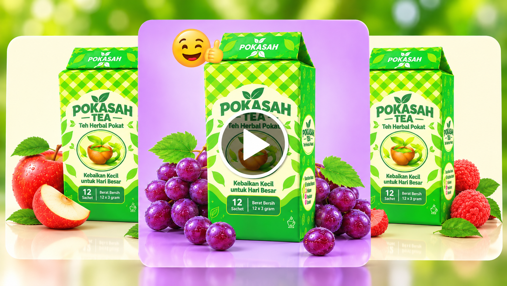
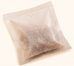
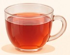

Bahan Alami
Menggunakan tanaman pokak sebagai bahan utama.

Kenali proses pembuatan dan
informasi lengkap tentang POKASAH TEA!

Teh herbal inovatif dari tanaman pokak
dengan kemasan unik yang mudah larut!

Menggunakan tanaman pokak sebagai bahan utama.

Dibuat dari gelatin dan cangkang telur yang mudah larut.

Sehat untuk tubuh tanpa rasa manis berlebih.
Kemasan larut alami, lebih peduli bumi.